Examples for the image processing chapter¶
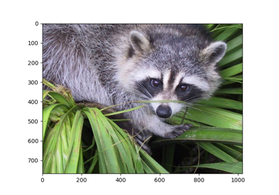
Displaying a Raccoon Face
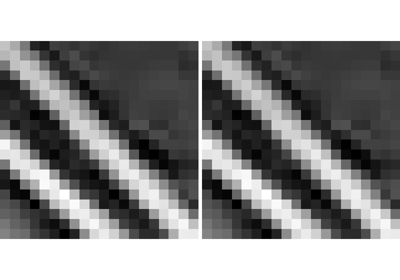
Image interpolation
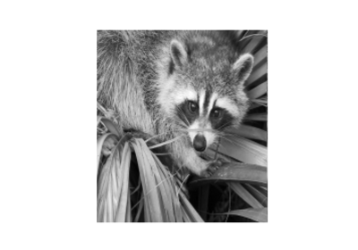
Plot the block mean of an image
Plot the block mean of an image
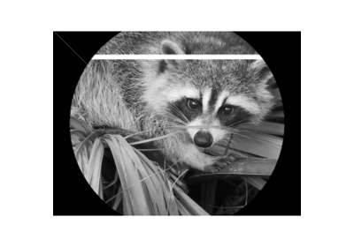
Image manipulation and NumPy arrays
Image manipulation and NumPy arrays
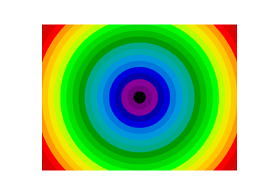
Radial mean

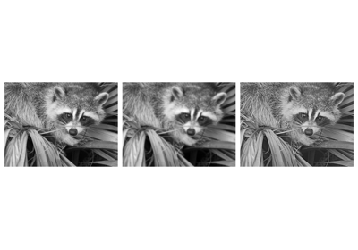
Image sharpening
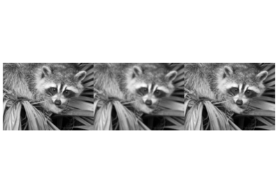
Blurring of images
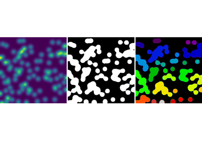
Synthetic data
Opening, erosion, and propagation
Opening, erosion, and propagation

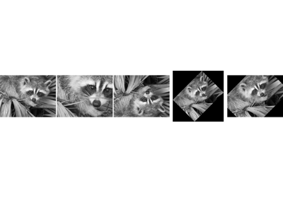
Geometrical transformations
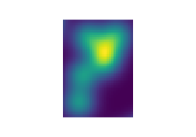
Find the bounding box of an object
Find the bounding box of an object
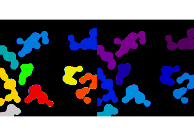
Measurements from images
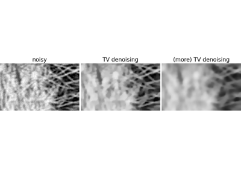
Total Variation denoising
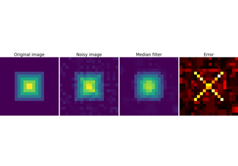
Denoising an image with the median filter
Denoising an image with the median filter
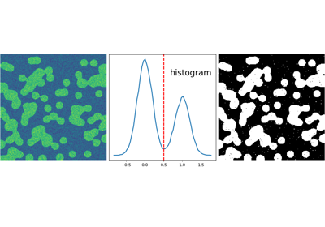
Histogram segmentation
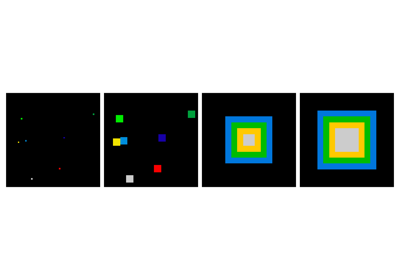
Greyscale dilation
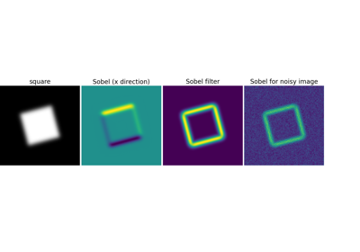
Finding edges with Sobel filters
Finding edges with Sobel filters
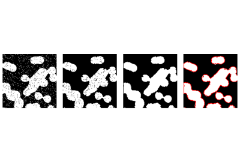
Cleaning segmentation with mathematical morphology
Cleaning segmentation with mathematical morphology
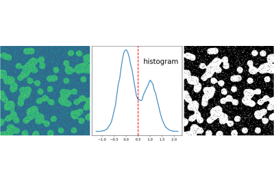
Segmentation with Gaussian mixture models
Segmentation with Gaussian mixture models
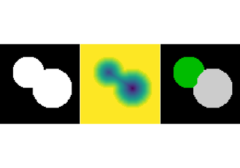
Watershed segmentation
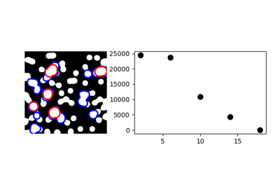
Granulometry
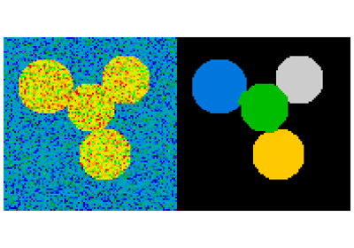
Segmentation with spectral clustering
Segmentation with spectral clustering